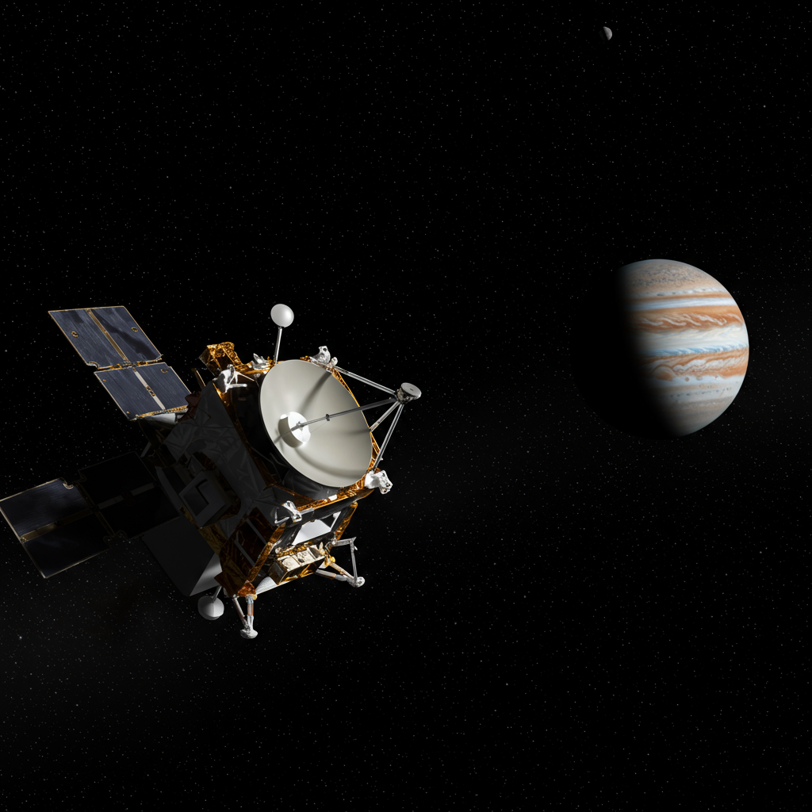

Sonda Galileo
Agencia: NASA
Fecha de lanzamiento: 18 de octubre de 1989
Arribo a Júpiter: 7 de diciembre de 1995
Duración total: 14 años (incluye sobrevuelo de Venus, Tierra y asteroides)
Tipo de misión: Orbitador y sonda atmosférica de Júpiter
Órbita: Heliocéntrica → Júpiter (orbital)
Instrumentación: Espectrómetros infrarrojos y ultravioleta, magnetómetro, cámaras multiespectrales, medidor de plasma, sonda atmosférica
Impacto histórico
Galileo fue la primera sonda en entrar en órbita alrededor de Júpiter y estudiar de cerca sus lunas más grandes: Ío, Europa, Ganímedes y Calisto. Su módulo atmosférico penetró la densa atmósfera joviana en 1995, enviando los primeros datos directos de un planeta gigante. La misión reveló volcanismo activo en Ío, hielo y posible océano en Europa, y sorprendentes estructuras magnéticas en Ganímedes. Galileo transformó por completo el conocimiento sobre el sistema joviano antes de finalizar su viaje impactando Júpiter en 2003 para evitar contaminación biológica en lunas potencialmente habitables.